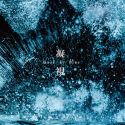

艾爾（英語：Ale），又譯為麥酒、麥芽酒，為一種上層發酵啤酒）， 常帶有更加濃烈的口感，酒體飽滿，可以形成很好的果仁味道和水果味道。如果大麥處理的好，也可以產生巧克力和蜂蜜香味。

共收錄三首曲目，除了〈凝視〉之外，更邀請到來自新加坡的創作歌手與製作人 Charlie Lim 替這首歌做Remix版本。加入人聲與全新的節奏，展現〈凝視〉的全新風貌。另一首，是凱婷所演奏的鋼琴曲 〈晨曦 Dawn〉，常看大象體操現場的樂迷可能已經聽過這首歌，而它也是大象體操美國巡迴的開場曲目。